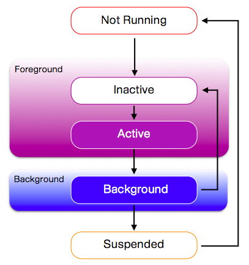

application이 아직 시작되기 전 또는 OS에 의해서 종료되었거나 크래쉬가 난 경우의 상태.
application이 foreground에서 실행중이지만 이벤트를 받지는 않는 상태.
코드는 실행 가능.
전화 / 문자가 왔을 경우, 기기가 잠금 상태 또는 다른 window가 overlay 되어 있을 때.
application이 foreground에서 실행중이며 이벤트를 받는 상태.
사용자가 application을 사용중인 일반적인 상태.
application이 background에서 실행중이며 이벤트를 받지 않는 상태.
코드는 실행 가능.
보여지지 않는 상태이며 GUI를 업데이트할 필요가 없음.
iOS4.0 이후 버전부터 사용 가능.
application이 background에 있으며 코드를 실행하지 않는 상태.
CPU를 사용하지 않는 상태.
OS에서 메모리를 해제해야 하는 경우 이 상태에 있는 application은 예고없이 시스템의 재량에 따라 종료될 수 있음.
iOS 4.0 이후 버전부터 사용 가능.
오직 하나의 application 만이 foreground ( Active, Inactive ) 상태를 가질 수 있다.